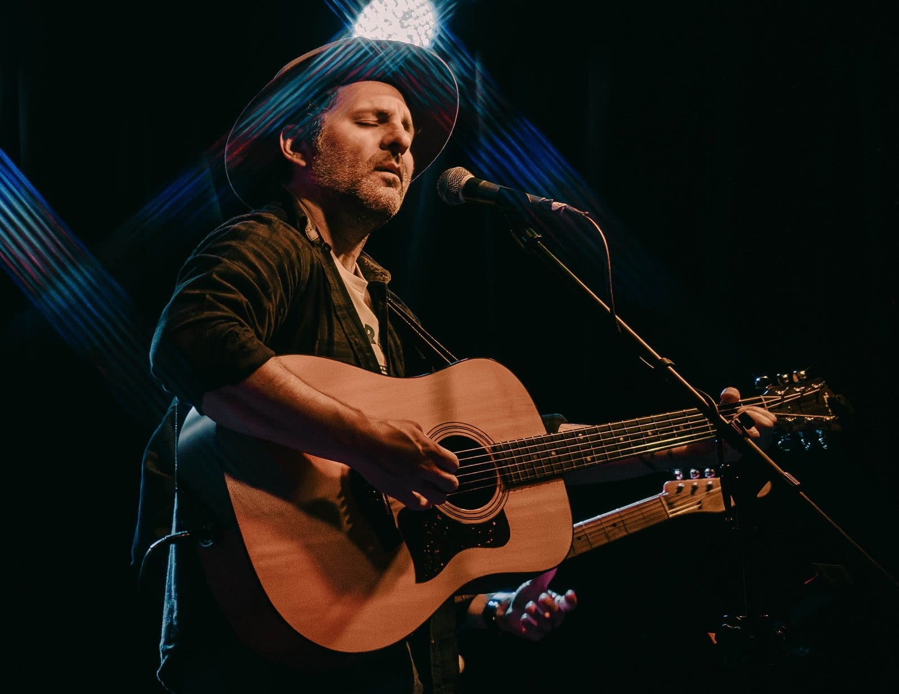
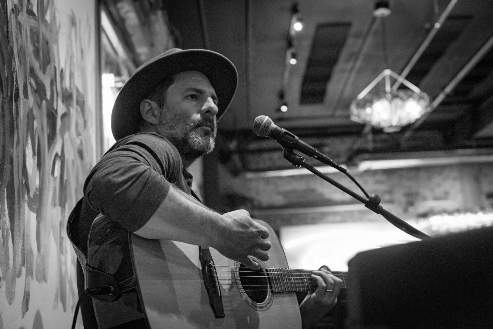
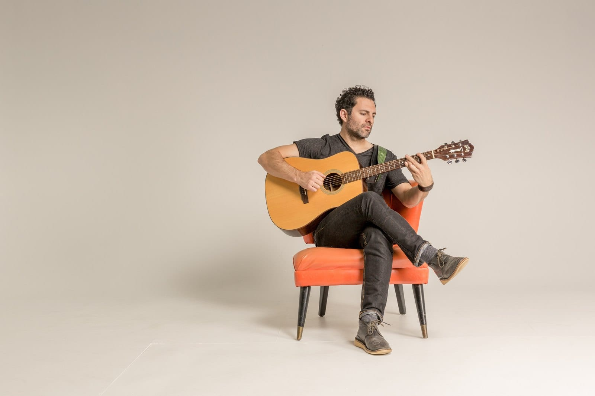
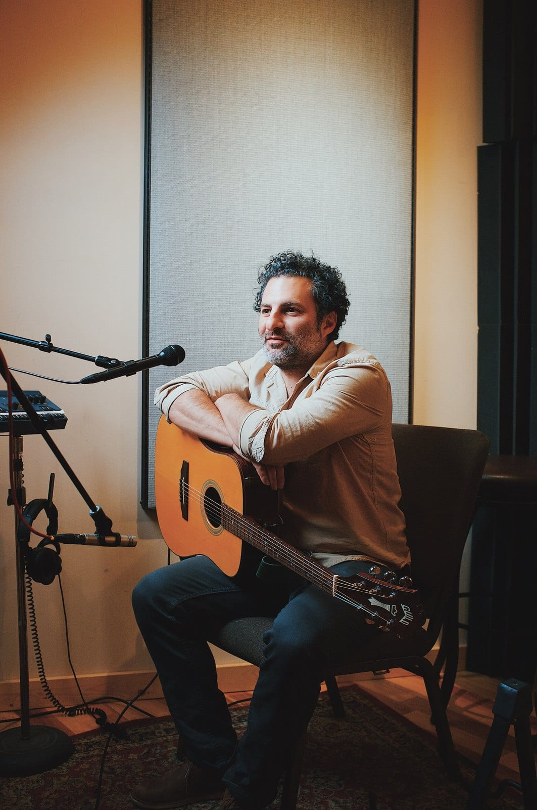
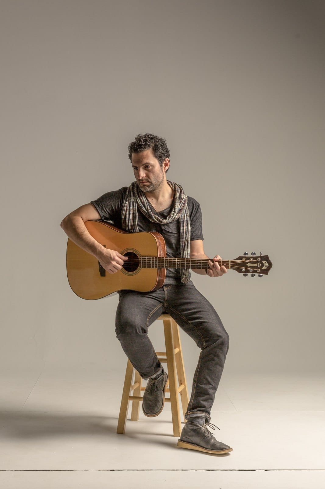

Original singer-songwriter
René Moffatt
- FinalistTop 10, Al Johnson Performing Songwriter ContestWildflower! Arts & Music Festival, 2024
- NomineeFolk/Contemporary Album of the YearWammie Music Awards
His own songs and covers, solo or with his band.
You know that moment at a party when someone picks up a guitar and sings a song they wrote? That’s what René Moffatt does, and his folk and Americana songs would sit nicely on a playlist with Josh Ritter and The Avett Brothers. He’s a lovely choice for welcome drinks, a patio party or a dinner where you’d like people to listen, and he can bring his band, René Moffatt & The Moonshadows, when you want a bigger sound.
We can plan the music around your event, from how many musicians René brings to the songs and what everyone wears. Here’s how booking through Signet works.
Awards and press
- FinalistTop 10, Al Johnson Performing Songwriter ContestWildflower! Arts & Music Festival, 2024
- NomineeFolk/Contemporary Album of the YearWammie Music Awards
In the press and on air
- Alex Dezen of The Damnwells
Press · 2023
“equally whimsical and profound”
Praise for All My Revelations
On his song Stuck Inside.
- We Love DC
Press · 2011
- KRFC 88.9 FM, Fort Collins
Radio
Guest on Locally Sourced
Stages and credits
- The first Boulder Roots Music Fest, with his band The Moonshadows (2025)
- FoCoMX in Fort Collins, with The Moonshadows (2026)
- Opening for Lemongrass at Swallow Hill Music (2027)
- IOTA Club and Cafe, The Hamilton and the Smithsonian's Luce Center in Washington, D.C., and Globe Hall, Swallow Hill and The Laughing Goat in Colorado
- His EP All My Revelations features session bassist Sean Hurley and keyboardist Daniel Clarke (2023)
- Three years of guitar study at the Levine School of Music in Washington, D.C.
- A DC Commission on the Arts and Humanities grant for his music video Route 42 (2011)
- Songwriter in residence at The Molecule Effect in Denver (2023)
Trusted and booked by
He’s based just outside Denver and has six records to his name, including King of the Mountain and Here and Now Is Home, and he’s entered the NPR Tiny Desk Contest every year since 2019. He calls his music heady folk for the open-hearted.
On his own, he’s played places around Denver where people come just for the songs, such as Swallow Hill and the Black Rose Acoustic Society, and he’s also performed at the Denver Botanic Gardens and the Clyfford Still Museum. His band adds lead guitar, bass and drums to those same songs. They’ve played the Boulder Roots Music Fest, and you can watch them in the video clips below.
Configurations
| Size | What it suits |
|---|---|
| SoloVoice and acoustic guitar | Just René and his guitar is perfect for a smaller crowd where people want to sit and listen. |
| DuoVoice and acoustic guitar, plus lead guitar | The duo is a good fit for cocktail hours, patios and dinners that are a little too big for one guitar. |
| TrioVoice and guitar, lead guitar and bass | Go with the trio if you'd like a fuller sound without drums. |
| QuartetThe trio plus drums, which is René Moffatt & The Moonshadows | Book the whole band for a park stage, a summer party or a festival-style event. |
Occasions
Perfect booking for
- Wedding ceremonies & cocktail hours
- René can play your ceremony with just his voice and an acoustic guitar, then stay on for the cocktail hour and keep things quiet enough for everyone to catch up. It sounds like one person singing to the people in front of him, and he can play his own songs, covers or a mix of both.
- Retreat evenings in the mountains
- René can play solo or with his trio after a long day of sessions, quietly enough for people to talk, and his songs are worth stopping to hear.
- Dinner parties and house concerts
- He’s a great fit for a home, especially if you’d like your guests to sit and listen to the songs. Indoors, we’d usually suggest René solo, and the trio works well in a backyard.
- Farmers markets, libraries and summer series
- He’s a featured artist in the Denver Public Library’s Volume Denver program. That makes him a natural fit for a library or a farmers market on his own, and his band can play a park stage for a city’s summer series. Send us the call for performers and we’ll suggest the right size.
Working out how the music fits around the speeches? Our run of show planner can help, and our cost guide gives a general view of what live music costs across Colorado.
Song list
A sample of his songs.
René usually leads with his own songs, and he plays covers, too.


- Hope For Better ThingsRené Moffatt
- Calendar YearRené Moffatt
- Heirloom WinnebagoRené Moffatt
- Stuck InsideRené Moffatt
- Standing In The Shadow Of The MoonRené Moffatt
- If You Were NearRené Moffatt
- Goodnight, TexasRené Moffatt
- Come Of AgeRené Moffatt
- Halfway HomeRené Moffatt
- Iron Gates Of LoveRené Moffatt
- WaterfallRené Moffatt
- What If I, What If YouRené Moffatt
- BlackbirdThe Beatles
- Mammas Don’t Let Your Babies Grow Up To Be CowboysWillie Nelson
- DriveThe Cars
His records are Here and Now Is Home, What If I, What If You, Overheard: Live & Acoustic, All My Revelations, King of the Mountain and Our Love Will Be A Voice.
Video Clips
Watch René Moffatt play his songs and a few covers.
You can watch him solo, with his trio on Heirloom Winnebago and with a band on a Willie Nelson song. There’s a Beatles cover here, too, so you can hear what he does with a song that isn’t his.






The band
René Moffatt & The Moonshadows, live.
Here’s the full band on a Denver club stage playing Calendar Year and Stuck Inside. After that, you can watch nine songs from their set at the Underground Music Showcase in the summer of 2026, with eight of his own and a Cars cover.
What clients say
“René was amazing! René was a consummate professional, oh and his musical skills were spot on! Highly recommended!”
Venues
We’d pick René Moffatt for live music at these venues.

Colorado Springs, above Garden of the Gods
Garden of the Gods Resort and Club
The Three Graces Ballroom and Terrace, the View at Kissing Camels, the Garden Room, the Hill Room and the Reflection Pool.
Acts we'd pickClassical Strings · Tejas Singh · Meghan Clarisse
Live music at Garden of the Gods Resort
Downtown Boulder
St Julien Hotel & Spa
The Xanadu Ballroom, the lawn, the Redgarden terraces and Jill’s, with views of the Flatirons.
Acts we'd pickClassical Strings · Tejas Singh · René Moffatt
Live music at St Julien Hotel & Spa
René Moffatt questions
Have a question we haven’t covered here? Take a look at our full list of questions.
Does he play covers at a private event?
How loud is it?
Can he play outdoors?
Book René Moffatt for your event, solo or with his band.
Send us the date, tell us a little about your event, and we’ll get back to you with availability and costs.
Want photos or video of your event? Add them to your booking.